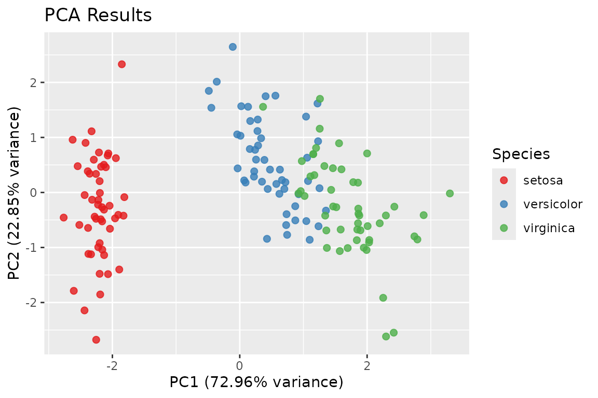

Dimensionality reduction: fs_pca() and fs_svd()
Source:vignettes/articles/dimensionality-reduction.Rmd
dimensionality-reduction.Rmdfs_pca() and fs_svd() do
not select features. They replace the original columns
with a few new ones, each a linear combination of all the
inputs. You still have to measure every variable, and the components are
chosen without reference to any outcome. The highest-variance directions
need not be the ones that predict anything.
Both functions return a plain list rather than an
fs_result.
fs_pca()
fs_pca() runs a PCA on the numeric columns of a data
frame. Character and factor columns are kept aside as labels. Incomplete
rows and zero-variance columns are dropped before the decomposition, and
meta records what was used.
pca <- fs_pca(iris, num_pc = 2, label_col = "Species")
names(pca)
#> [1] "pc_loadings" "pc_scores" "var_explained" "pca_df"
#> [5] "meta" "plot"
pca$var_explained
#> [1] 0.7296245 0.2285076
pca$pc_loadings
#> PC1 PC2
#> Sepal.Length 0.5210659 -0.37741762
#> Sepal.Width -0.2693474 -0.92329566
#> Petal.Length 0.5804131 -0.02449161
#> Petal.Width 0.5648565 -0.06694199
head(pca$pca_df)
#> PC1 PC2 Species
#> <num> <num> <fctr>
#> 1: -2.257141 -0.4784238 setosa
#> 2: -2.074013 0.6718827 setosa
#> 3: -2.356335 0.3407664 setosa
#> 4: -2.291707 0.5953999 setosa
#> 5: -2.381863 -0.6446757 setosa
#> 6: -2.068701 -1.4842053 setosa
pca$meta$n_rows_used
#> [1] 150Reading the output
-
var_explainedis the share of the total variance each retained component carries. With two components out of four it sums to less than 1. -
pc_loadingsholds the eigenvectors (prcomp()’srotation), one row per input column. Signs are arbitrary. A component and its negation are the same component. -
pc_scoresandpca_dfhold the coordinates of each observation.
By default columns are centered and scaled
(scale_data = TRUE), so the PCA is on the correlation
matrix. Leave that on unless the columns share meaningful units.
Otherwise the column with the largest variance dominates.
Plotting
A ggplot of PC1 against PC2 is built whenever a
label_col is supplied, two or more components are kept, and
ggplot2 is installed. plot = TRUE also prints it:
pca$plot
Large data
Below 10 million cells, fs_pca() uses
stats::prcomp(). At or above that size it uses
bigstatsr::big_SVD() on a temporary file-backed matrix, if
bigstatsr is installed, and computes only the requested components. In
that case the total-variance denominator is computed from column
statistics, so var_explained still means share of the
whole.
fs_svd()
fs_svd() is the lower-level tool. It takes a numeric
matrix x and returns singular values and vectors:
m <- as.matrix(mtcars)
s <- fs_svd(m, n_singular_values = 3, scale_input = TRUE)
round(s$singular_values, 3)
#> [1] 14.313 9.064 4.409
dim(s$left_singular_vectors)
#> [1] 32 3
dim(s$right_singular_vectors)
#> [1] 11 3scale_input = TRUE (the default) centers and scales the
columns first, so the triplets factorize scale(x), not
x. The squared singular values divided by
n - 1 are the PCA eigenvalues of the scaled data:
all_sv <- fs_svd(m)$singular_values
round(all_sv^2 / (nrow(m) - 1), 4)[1:3]
#> [1] 6.6084 2.6505 0.6272
round(prcomp(m, scale. = TRUE)$sdev^2, 4)[1:3]
#> [1] 6.6084 2.6505 0.6272Exact or approximate
svd_method = "auto" uses base::svd() unless
you ask for fewer singular values than min(dim(x))
and the matrix is larger than
svd_threshold (100) in its smaller dimension. In that case
it uses RSpectra::svds(), which computes only the leading
triplets. svd_method = "approx" forces the approximate
solver when it is applicable.
set.seed(1)
big <- matrix(rnorm(400 * 150), 400, 150)
approx <- fs_svd(big, n_singular_values = 5, svd_method = "approx")
exact <- fs_svd(big, n_singular_values = 5, svd_method = "exact")
all.equal(approx$singular_values, exact$singular_values, tolerance = 1e-6)
#> [1] TRUESingular vectors are unique only up to sign, so compare them with
abs() or through reconstructions, not element by
element.